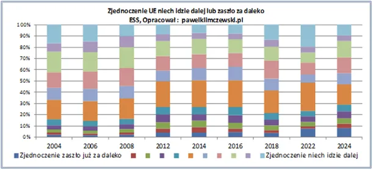
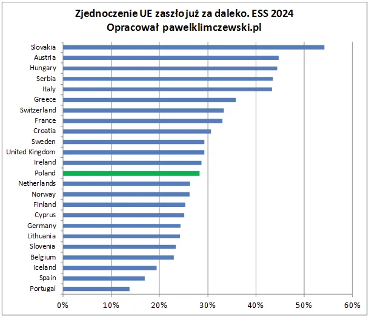

EU żegnaj! Tylko kiedy?
Poza wieloma sondażami robionymi na polityczną potrzebę chwili, aby Polakom powiedzieć, co mają myśleć, prowadzone są rzetelne badania socjologiczne mające na celu diagnozę sytuacji. Co ciekawe badania takie prowadzone są równolegle w większości państw europejskich przez całe dekady wg wspólnego schematu, co daje prawo do porównań w czasie i przestrzeni. Takim projektem jest Europejski Sondaż Społeczny, w którym Londyn I Oslo doglądają stanu ducha i umysłów Europejczyków.
Niestety redakcje mediów nie korzystają z takich danych, bo eksploracja danych w skomplikowanych formatach wymaga czasu i umiejętności znacznie większych niż skopiowanie wykresu i tabeli przysłanych z sondażowni, czy innej centrali dezinformacyjnej.
Jednym z wielu sporów, jakie dzielą Polaków jest nasz udział w Unii Europejskiej. Temat jest trudny, bo sama UE jest niewiadomo-czym. To, co wiadomo, to tyle, że jej władze same się wybierają i narzucają swoje rozwiązania krajom członkowskich. Jeśli by zastosować zasadę, że "po owocach ich poznacie" organizatorem tego projektu jest międzynarodowy kapitał, czyli konsorcja bankowe, w tym amerykański FED. Wspólna waluta jest dla Europy tym samym, co dolar dla USA, czyli sposobem na kreację gotówki z powietrza, jedyną ceną tej techniki jest permanentna inflacja, czyli okradanie rynków.
Spójrzmy zatem, jak Polacy prze dwie dekady zmieniali swoje myślenie o UE. Uczestniczymy formalnie w tym projekcie od 2004 roku, ale przez poprzednie 10 lat oddaliśmy za nic dostęp do naszego rynku, co wyczyściło przedpole na ekspansję zewnętrznych podmiotów.
Pierwszy wykres pokazuje ewolucje opinii w Polsce, drugi aktualne porównanie tych opinii w 24 państwach europejskich, niekoniecznie członkowskich. Szwajcarzy, czy Serbowie są też narażeni na politykę UE i mają o niej swoje zdanie.

Na wykresie pierwszym skala możliwych odpowiedzi zawierała 11 punktów na kontinuum, zatem punkt szósty, pomarańczowy jest środkiem skali, czyli odpowiedzią typu "nie wiem, nie mam zdania". Kolorowe paski pod paskiem pomarańczowym to sceptycy, paski wyżej to zwolennicy dalszej integracji. Oczywiście opinie respondentów nie zależą tylko od działań UE, ale także od globalnych koniunktur, stąd w procesie widzimy falowanie, ale też i trend. W ostatnich 6 latach liczba sceptyków rośnie i osiąga obecnie 30 %, liczba zwolenników to 53%.
Na drugim wykresie widzimy, że jesteśmy w połowie stawki, wcale nie daleko od Wielkiej Brytanii, która już jest po Brexicie. Tam liczba zwolenników jest poniżej 50%, ale do stanu z roku 2004, gdzie zwolenników w Polsce było blisko 70% a sceptyków raptem 15 % dzieli nas całe pokolenie.

Nastroje sceptyczne koncentrują się na wschodzie i południu Europy. Ostatnio w Chorwacji wybory wygrał prezydent sceptyczny do zachodnich rozwiązań, w tym do wojny na Ukrainie. Słowacja i Austria to bardzo ważne geopolitycznie punkty. W samym jądrze struktury we Francji mamy ponad 30% sceptyków. De facto UE jest maszynką do przelewania dochodu z peryferii do centrum, czyli do Niemiec. Jesteśmy świadkami eskalacji wojny gospodarczej między USA i Niemcami, co daje nadzieję, że destrukcja UE będzie celem nowej administracji w Waszyngtonie.
Paweł Klimczewski